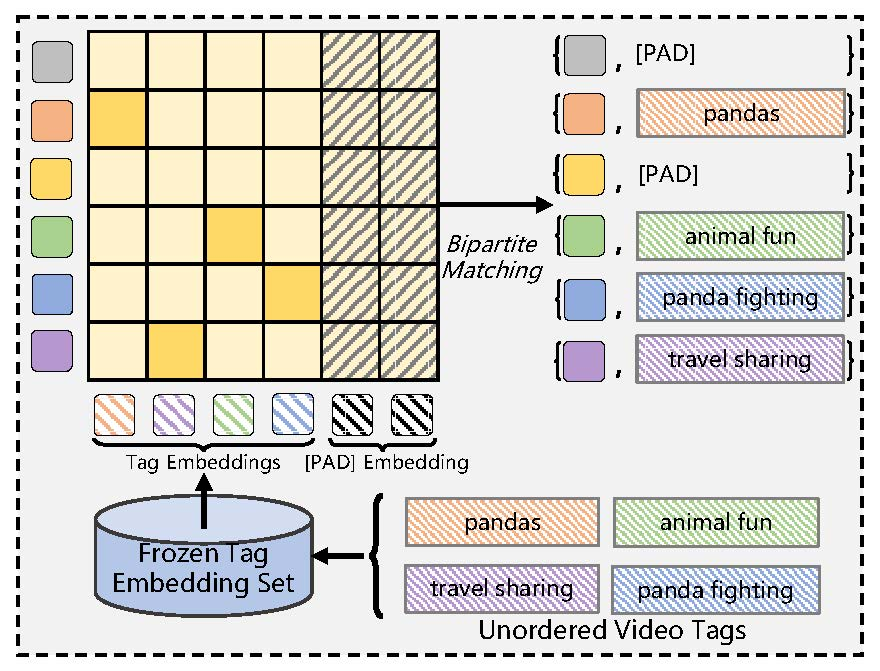
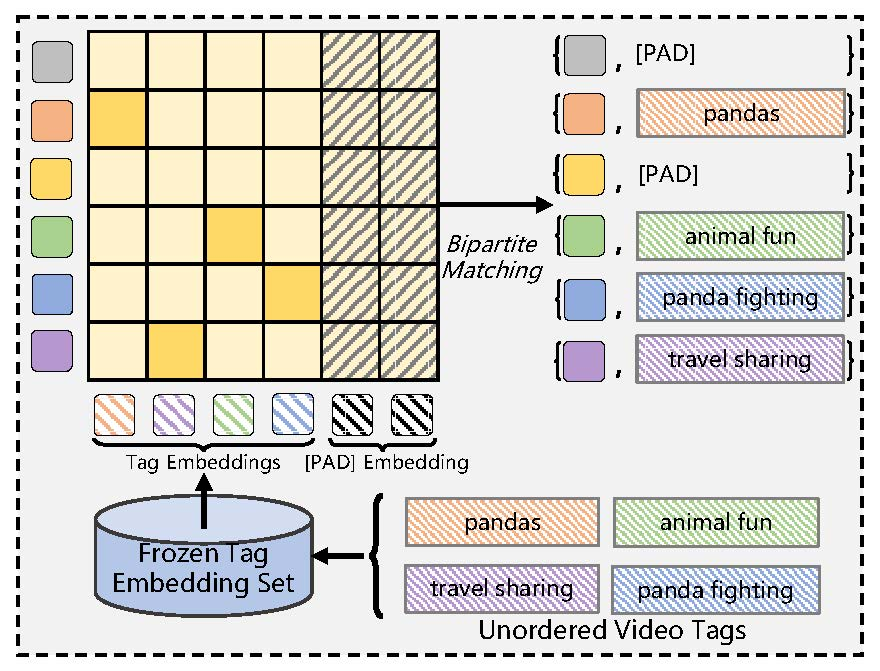
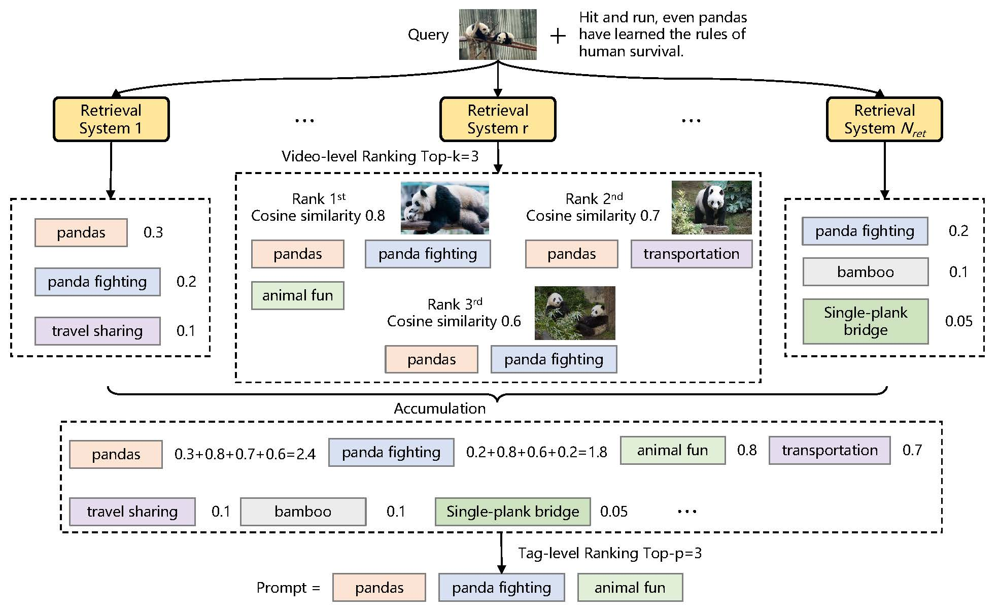
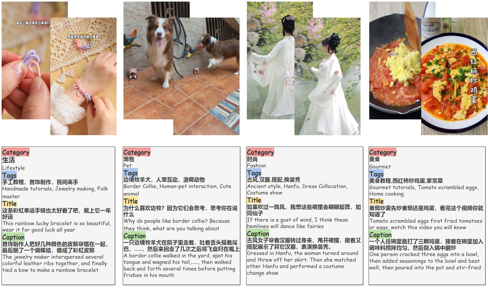

Promp-Tag Alignment
We perform one-to-one alignment with ground-truth tags via bipartite matching, to semantically match each order prompt toward a distinct tag.
Multimodal tagging is essential for content understanding by assigning concise, semantically relevant tags to visual inputs. However, real-world tagging is inherently open-ended: user-generated content is noisy, long-tailed, and continuously evolving, challenging conventional closed-set or open-vocabulary classification methods. We propose Open-Tag, a generative framework for Open-world Multimodal Tagging that produces unordered, variable-length tag sequences in natural language without relying on predefined tag sets.
Open-Tag introduces two key innovations: (1) an Order-Prompted Tag Sequence Generation that maps learnable, order-agnostic queries to latent tag semantics, enabling permutation-invariant tag generation, and (2) a Multi-Source Retrieval-Augmented Generation that fuses tag candidates from heterogeneous retrieval systems across visual, textual, and metadata modalities. A score normalization and aggregation strategy ensures robust fusion, enhancing the diversity and grounding of generated tags.
To evaluate Open-Tag, we construct two large-scale datasets: CREATE-Tag (Chinese video) and PEXEL-Tag (English image), with over 3M videos and 160K images with tens of thousands of real-user tags. We propose a novel open-set evaluation metric, Tag Gain, to quantify the generation of relevant but previously unseen tags. Experiments show that Open-Tag outperforms state-of-the-art baselines on closed-set F1 and open-set Tag Gain, highlighting its generalization and novel tag discovery capabilities.
Overview of the Open-Tag Framework: (a) Multimodal Hybrid Encoder fuses visual (image frames or video clips) and textual (user titles) features via cross-modal attention to produce a unified representation. (b) Order Prompt Encoder generates sample-specific learnable queries, aligned with ground-truth tags via bipartite matching and contrastive learning. (c) Multi-source Tag Recommendation module retrieves tag candidates from similar multimodal content via multiple retrieval systems, forming an external prompt for generation. (d) Prompt-guided Tag Decoder auto-regressively generates tag sequences using implicit semantics from order prompts and explicit knowledge from retrieved tags. All components are jointly trained end-to-end.
We perform one-to-one alignment with ground-truth tags via bipartite matching, to semantically match each order prompt toward a distinct tag.
Given a query video, multiple retrieval systems–video-to-video, title-to-title, and cross-modal retrieval—-return relevant videos with associated tags and scores. Retrieved results are aggregated, and a consensus scoring mechanism selects top-ranked tags as explicit generation guidance.
We focus on CREATE-Tag, which provides 210K training [Data Download] and 5K test [Data Download] samples. The training and test sets share 2,795 tags. For evaluation, we split these into 705 common and 2,090 rare tags.
We also build PEXEL-Tag, a newly collected dataset from the Pexels platform , comprising 162K training [Data Download] and 5K test [Data Download] samples. The dataset contains 28,094 unique tags, with 5,669 shared between training and testing. We further categorize these into 1,627 common and 4,042 rare tags for performance analysis
Given a generated tag set \(T_{gen} = \{t_1, t_2, \dots, t_k\}\) and the corresponding visual input \(v\), we construct a filtered subset \(\hat{T}_{gen}\) by enforcing two criteria:
We apply a greedy filtering process: starting from an empty set \(\hat{T}_{gen} = \emptyset\), we iterate through the candidate tags (optionally sorted by visual relevance), and sequentially add a tag \(t_j\) to \(\hat{T}_{gen}\) only if it satisfies both conditions above. Typically, we set \(\tau_{\text{rel}}=0.3\) and \(\tau_{\text{div}}=0.8\). Formally:
\[ \hat{T}_{gen} = \left\{ t_j \in T_{gen} \;\middle|\; \mathrm{sim}_{\text{CLIP}}(t_j, v) > \tau_{\text{rel}} \land \forall t' \in \hat{T}_{gen},\ \mathrm{sim}_{\text{BGE}}(t_j, t') < \tau_{\text{div}} \right\}. \]
Based on the filtered tag set \(\hat{T}_{gen}\), we define two variants of Tag Gain to assess open-world tagging:
| Method | CREATE-Tag | PEXEL-Tag | ||||||
|---|---|---|---|---|---|---|---|---|
| Tknown | Δknown | Tnovel | Δnovel | Tknown | Δknown | Tnovel | Δnovel | |
| Bin | 1.2 | 28.1% | 0.00 | 0.00% | 0.8 | 21.4% | 0.00 | 0.00% |
| ASL | 1.4 | 32.5% | 0.00 | 0.00% | 0.9 | 24.6% | 0.00 | 0.00% |
| Order-Free | 1.4 | 31.6% | 0.00 | 0.00% | 1.0 | 27.4% | 0.00 | 0.00% |
| Orderless | 1.8 | 41.3% | 0.00 | 0.00% | 1.4 | 36.4% | 0.00 | 0.00% |
| Tag2Text | 1.7 | 38.5% | 0.00 | 0.00% | 1.1 | 30.2% | 0.00 | 0.00% |
| ML-Decoder | 1.8 | 42.2% | 0.00 | 0.00% | 1.2 | 33.8% | 0.00 | 0.00% |
| RAM | 1.8 | 42.5% | 0.00 | 0.00% | 1.3 | 34.2% | 0.00 | 0.00% |
| RAM++ | 2.0 | 45.6% | 0.00 | 0.00% | 1.4 | 36.7% | 0.00 | 0.00% |
| Open-Book | 1.6 | 37.1% | 0.15 | 3.43% | 1.2 | 31.9% | 0.13 | 3.11% |
| Baseline | 1.6 | 37.3% | 0.10 | 2.24% | 1.3 | 34.7% | 0.11 | 2.63% |
| + OPG | 2.2 | 52.3% | 0.30 | 7.04% | 2.0 | 49.1% | 0.24 | 5.66% |
| + RAG | 4.8 | 80.3% | 3.95 | 72.8% | 4.5 | 94.3% | 3.61 | 71.2% |